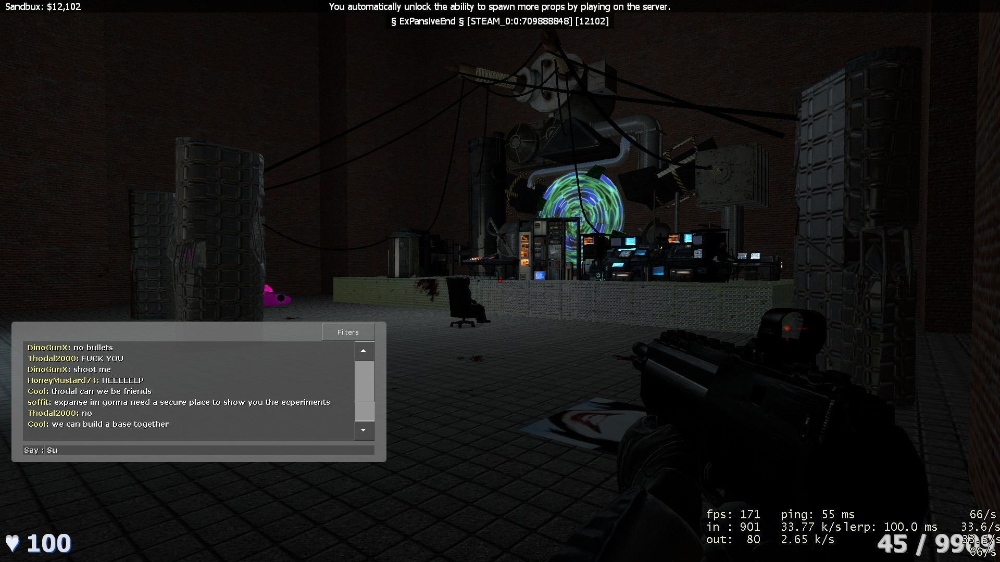
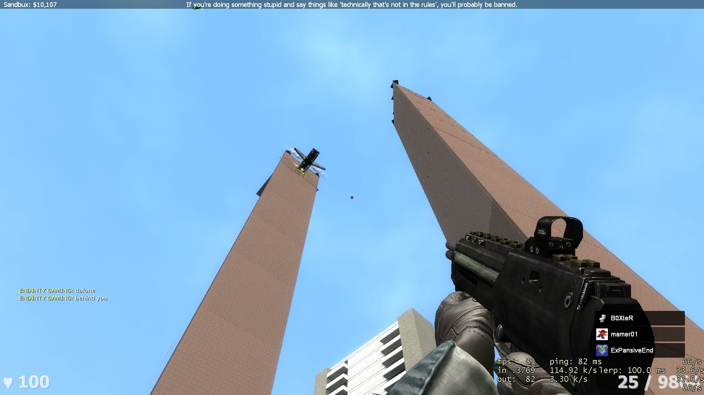

Events only happen for 3 reasons. Either a moderator or Console is on to host one. A player has organized one with participation from other players. Or a group of players has organized one with participation from other players.
Common Player Events :
------------------{ COMMON }-------------------------->
♦ [Insert-Town-Name-Here]
This event is hosted most frequently by a player named Janky, it usually entails filling lake tower from top-to-bottom, with
player made buildings to create a large "town-like" community structure.
♦ Retart Kart
This event is hosted by several people, most often SoundBoard or The Spycrab.
This event involves a dupe of a race-track which spans from the field near hill tower, down near spawn, and back up around / behind hilltower.
This event is preformed with many kinds of vehicles, or just a footrace, and is EXTREMELY fun.
♦ The "SoundBoard-Special"
This event is hosted exclusivley by SoundBoard, and could invlove any number of things. Previous SoundBoard-Specials
have featured TF2-like capture the flag, Tower defense, Retart Kart, and more. These events are almost always "Whole-Server" participation, and
surprisingly have had close to zero errors or hiccups during their happening.
------------------{ ADD-MINN }------------------------>
♦ Console Boss Brawl
This event is infamous, and also slightly rare. It occurs "sometimes" when Console is online.
The event entails Console sizing up one random player  (NOT RANDOM), and giving them an absurd amount of health. Close to 50 or 60 thousand.
Then other players, out of their own volition, will brutally murder the "Victim" (The boss). The player who is the boss, has a few special "abilities"
Namely ground slam, which instakills any players within about 15 feet* A bossbar and custom boss name are displayed on EVERYONES screen.
(Fun fact: This event is sometimes used to punish cheaters or demean those who are soon to be banned)
(NOT RANDOM), and giving them an absurd amount of health. Close to 50 or 60 thousand.
Then other players, out of their own volition, will brutally murder the "Victim" (The boss). The player who is the boss, has a few special "abilities"
Namely ground slam, which instakills any players within about 15 feet* A bossbar and custom boss name are displayed on EVERYONES screen.
(Fun fact: This event is sometimes used to punish cheaters or demean those who are soon to be banned)
♦ Dimensional Delerium
This event is semi-frequent, and occurs on the request and acceptance of The Spycrab, this event is
a "showcase" of all of the world-like builds made by Spycrab and other players,  where Spycrab teleports players around through these "Dimensions"
Some of which are deadly, others which are purely for test of skill, and others to give people epilleptic siezures or strokes. (oftentimes something
similair will happen where 1 or more players will be transported to a location for testing at random)
♦ Ghost-Hunts
Ghost hunts are specifically hosted by The Spycrab (He's very fun) the entire system appears to be controlled
by his commands. All ghosts, summoning functions, and detectors are all operated by him. These "hunts" usually are preceded by sightings or jumpscares
by faceless figures or the appearences of "The Gordons". This usually sparks participation from a few players.
The process of hunting usually involves monitoring multiple parts of the map, searching, and testing summons, and using the ledgendary Gordon Detectors.
------------------{ MINIGAMES }----------------------->
♦ Picksy-Choosy
Picksy Choosy is a small mini game that players may be selected to participate in, which can achive many outcomes from death to free Super-Crates.
♦ Concerts
Concerts are hosted by ANYONE, really they're more of "Shows" or presentations. Any player can set one up, and participation is inconsistent.
------------------{ UNOFFICIAL }---------------------->
♦ Purges
The purges are most commonly hosted by Janky, these purges are initiated when Janky feels that the population of
balds on the server is too high, (In excess of seven) Balds will die, and many others in the process. The purges continue either until
the count of balds is lowered to an acceptable level, or we give up.
♦ "The Muzza-Fuzza treatment"
The "Muzza-Fuzza treatment" is a type of "Executive action" where an especially "Annoying player" (clearly not born yet, or just annoying), is
"bullied" until they ragequit. Some background, "Muzza-Fuzza" was a player on the server who obviously had not been born yet, and had somehow set up
a computer inside of his mothers womb. He was absolutely COOKED the moment he joined.)
♦ Community Builds
Group builds in excess of 100 props, and multiple Contributors.

----------------------------------------------------->
 An idiot got himself trapped.
An idiot got himself trapped.